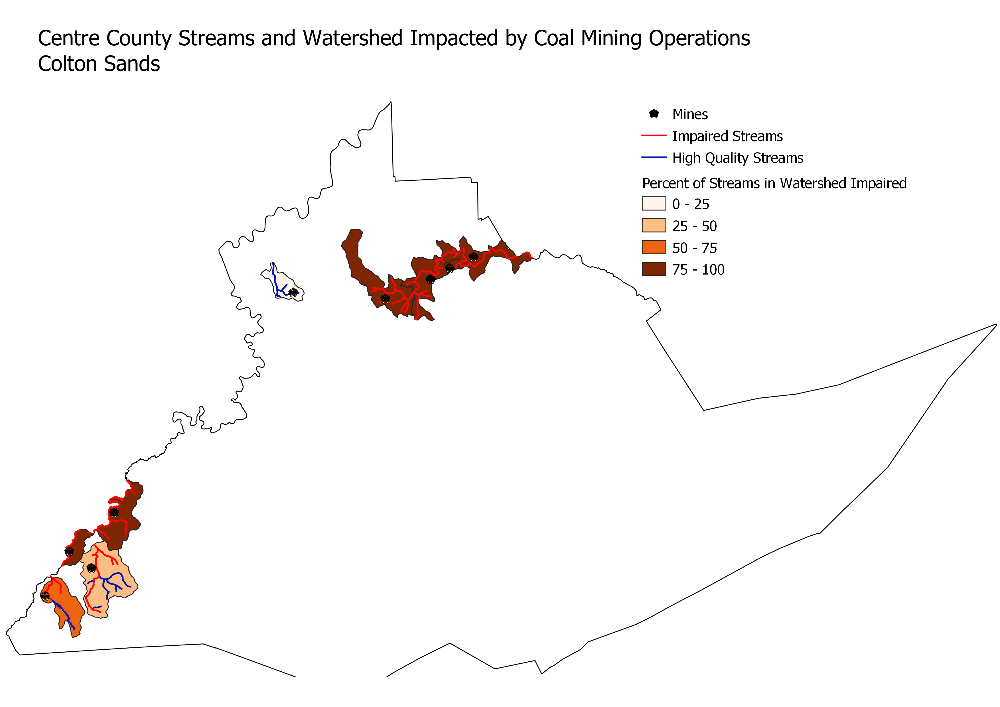

Homework 8:Vector Geoproccessing
Colton Sands
To what extent are Centre County streams impacted by the presence of Coal Mines in the watershed?
The first geoproccessing method I used was intersection. I used this to isolate the watersheds that contained coal mines. I then used intersection again to isolate the streams that passed through these water sheds. I then used the tool Sum Line Length to create a polygon layer that had information on the total length of high quality and impaired streams in each water shed. I created a ratio that showed what percent of the streams were impaired, answering my question.

Data used for this project
Coal Mine Locations
Watersheds
High Quality Streams
Impaired Streams
Image Source
Data Created
Centre County Coal Mines
High Quality Streams in Watersheds
Impaired Streams in Watersheds
Watershed Polygons with Stream Data